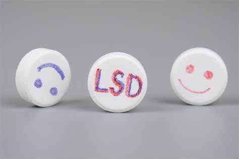

La dietilamida de ácido lisérgico, LSD-25 o simplemente LSD (del alemán Lysergsäure-Diethylamid),[1] también conocida como lisérgida o ácido, es una sustancia psicodélica semisintética que se obtiene de la ergolina y de la familia de las triptaminas y que produce efectos psicotrópicos. Sus efectos pueden incluir alucinaciones con ojos abiertos y cerrados, sinestesia, percepción distorsionada del tiempo, la alteración de la percepción, la conciencia y los sentimientos, además de sentir sensaciones o visualizar imágenes que, para el consumidor, pueden parecer reales.
Alucinaciones visuales y auditivas. Cambios en la percepción del tiempo y del espacio. Sensaciones de euforia o miedo intenso
Flashbacks, trastornos de ansiedad, psicosis en personas vulnerables. No causa abstinencia física, pero sí dependencia psicológica.
Popular en movimientos contraculturales. Hoy resurge su estudio para terapias experimentales en depresión y ansiedad terminal.
Contacta con profesionales de salud o visita sindrogas.com para obtener asistencia.
